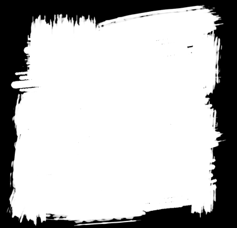

clip: rect()
deprecated
.Mask {
position: absolute;
clip: rect(30px, 170px, 170px, 30px);
}
Cause it already works perfectly on SVG content. Spec
Made by @iamvdo - Code on GitHub
All code blocks are editable and with live view
Clipping in CSS can be compared to Photoshop “Vector Masks”. So only vector shapes.

clip: rect()deprecated
.Mask {
position: absolute;
clip: rect(30px, 170px, 170px, 30px);
}
clip-path: inset()
.Mask {
clip-path: inset(30px 30px);
//clip-path: inset(30px 20px 50px 0);
}
clip-path: circle()
.Mask {
clip-path: circle(75px at center);
//clip-path: circle(closest-side at 50px 50px);
}
clip-path: polygon()
.Mask {
clip-path: polygon(50% 0%, 80% 100%, 0 40%, 100% 40%, 20% 100%);
//clip-path: polygon(evenodd, 50% 0%, 80% 100%, 0 40%, 100% 40%, 20% 100%);
}
clip-path: url() (referencing inline SVG <clipPath>)
<clipPath id="clipPath" clipPathUnits="objectBoundingBox">
<polygon points=".5,0 .8,1 0,.4 1,.4 .2,1" />
</clipPath>
.Mask {
clip-path: url(#clipPath);
}
clip-path: url() (referencing inline SVG <clipPath>) + clip-rule: evenodd
<clipPath id="clipPathClipRule" class="ClipPath" clipPathUnits="objectBoundingBox">
<polygon points=".5,0 .8,1 0,.4 1,.4 .2,1" />
</clipPath>
.Mask {
clip-path: url(#clipPathClipRule);
}
.ClipPath polygon {
clip-rule: evenodd;
//clip-rule: nonzero;
}
clip-path: url() (referencing external SVG <clipPath>)
.Mask {
clip-path: url(masks.svg#clipPath);
}
Masking in CSS can be compared to Photoshop masks, as follow:
Here are masks images used below: alpha-mask.png and luminance-mask.png

mask-image: linear-gradient() (using alpha mask)
.Mask {
mask-image: linear-gradient(black 25%, transparent 50%);
}
mask-image: linear-gradient() (forcing luminance mask)
.Mask {
mask-image: linear-gradient(white 25%, black 50%);
mask-mode: luminance;
/* old WebKit */
//mask-source-type: luminance;
}
mask-image: url() (using default alpha mask)
.Mask {
mask-image: url(alpha-mask.png);
}
mask-image: url() (forcing luminance mask)
.Mask {
mask-image: url(luminance-mask.png);
mask-mode: luminance;
/* old WebKit */
//mask-source-type: luminance;
}
mask-*
.Mask {
mask-image: url(alpha-mask.png);
mask-size: 50%;
mask-repeat: round;
}
mask-image: url() (referencing inline SVG <mask>, using default luminance mask)
<mask id="mask" maskContentUnits="objectBoundingBox">
<rect width="1" height="1" fill="url(#gradient)"/>
<linearGradient x2="0" y2="1" id="gradient">
<stop offset="25%" stop-color="white" />
<stop offset="50%" stop-color="black" />
</linearGradient>
</mask>
.Mask {
mask-image: url(#mask);
}
mask-image: url() (referencing inline SVG <mask>, forcing alpha mask)
<mask id="maskMaskSource" class="MaskType" maskContentUnits="objectBoundingBox">
<rect width="1" height="1" fill="url(#gradientMaskSource)"/>
<linearGradient x2="0" y2="1" id="gradientMaskSource">
<stop offset="25%" stop-color="black" />
<stop offset="50%" stop-color="transparent" />
</linearGradient>
</mask>
.Mask {
mask-image: url(#maskMaskSource);
}
.MaskType {
mask-type: alpha;
}
mask-image: url() (referencing external SVG <mask>)
.Mask {
mask-image: url(masks.svg#mask);
}